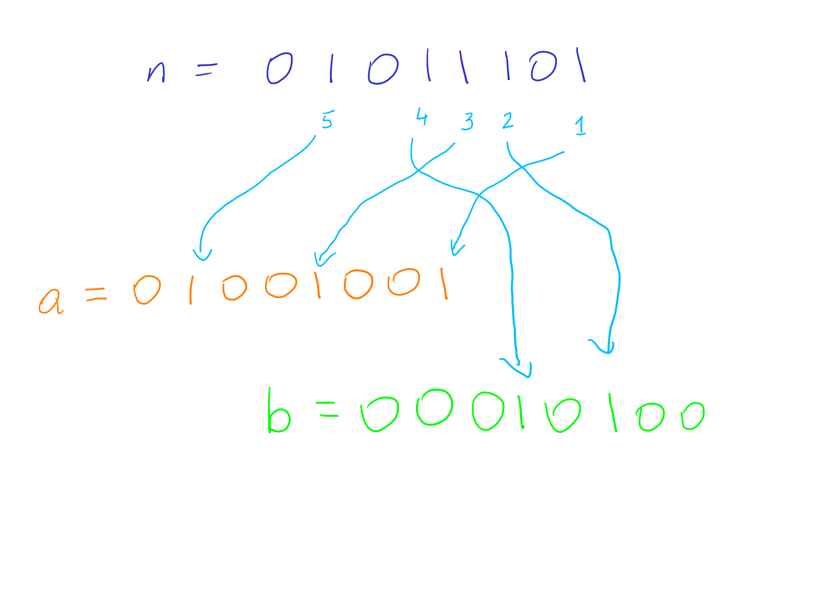

class: center, title-slide <br><br> # CSCI-UA 480: APS ## Algorithmic Problem Solving <br/><br/><br/><br/><br/><br/><br/> ## Fundamentals .author[ Instructor: Joanna Klukowska <br> ] .license[ Copyright 2020 Joanna Klukowska. Unless noted otherwise all content is released under a <br> [Creative Commons Attribution-ShareAlike 4.0 International License](https://creativecommons.org/licenses/by-sa/4.0/).<br> Background image by Stewart Weiss<br>] --- layout:true template: default name: section class: inverse, middle, center --- layout:true template: default name: challenge class: challenge --- layout:true template: default name: poll class: inverse, full-height, center, middle --- layout:true template: default name: breakout class: breakout --- layout:true template:default name:slide class: slide .bottom-left[© Joanna Klukowska. CC-BY-SA.] --- ## This Course - Course website: https://cs.nyu.edu/~joannakl/aps_f25/ This page contains the syllabus as well as loads of links to all other resources and services you will need for this class. - Course message board / discussion: Ed - Online judge: - Gradescope (for homework assignments) - Ed (for in-class assessments) - Codeforces (for outside contest participation) - Brightspace for access to these slides, problem sets, gradebook, exams, ... --- ## Online Contest (5 problems) [Codeforces](https://codeforces.com/) is a site designed with programming competition practice in mind. Throughout the semester you will need to participate in one or more contests scheduled on Codeforces. - get five problems accepted (can be in one or several different contests) - your solution has to be submitted to the contest while it is active (not to the archived version of a contest) - problems that you solve in divison 1 and all but problem A in division 2 contests earn you full credit - problem A in division 2 and all problems in division 3 and 4 contests earn you 50% credit, problems solved in unrated contests do not give you credit towards this class, but may still provide valuable practice - the [contest calendar](https://codeforces.com/calendar) is regularly updated with new contests, but do not wait till December to start --- ## Online Contest (5 problems) When you successfully solve a problem and __after__ the actual contest ends, you will need to share your solution with the rest of the class: - Create a workspace on Ed that is shared with anybody in the course (i.e., public). - Upload your code solution. - Create a few sample inputs and outputs. - Create a README file. It should also have a link to the contest itself and a link to the original problem statement in the contest. It should also contain instructions for how to compile and run your program. Finally, include any comments about challenged you faced and how you figured out the final correct solution. - Add a comment to the [Codeforces Submissins](https://edstem.org/us/courses/86057/discussion/6928582) thread on Ed. This comment should include - name and date of the contest - name of the problem you solved - link to the workspace with your solution - screenshot showing your accepted verdict - this screenshot needs to include your username, the name of the problem, and the time stamp If you solve more than one problem in a single contest, create multiple workspaces and make multiple posts/comments. --- ## Operations Count - How fast your program runs depends on how many things it does _things_ == operations that the CPU performs on behalf of the program - How many things the computer does depends on how you (the programmer) write the code, what algorithm you chose, etc -- So, how many operations does this program perform: .left-column2[ ```C++ #include <iostream> using namespace std; int main() { for (int i = 1; i <= 10; i++ ) { for (int j = 1; j <= 10; j++ ) { printf("%3d\t", i*j); } printf("\n"); } return 0; } ``` ] -- .right-column2[ .huge[.center[???]] ] --- ## Counting operations is not easy (possible) - hard to figure out what to count, some operations in the high level programming language may be actualy multiple operations on the CPU - some CPU operations are faster then others - some operations require I/O and that slows them down -- .big[we need a simplified way of deciding how fast the program runs] --- template: section # Asymptotic Analysis --- ## Asymptotic Analysis __$O(g(n)) = f(n)$__ There exist positive constants _c_ and _$n_0$_ such that $0 <= f(n) <= cg(n)$ for all $n >= n_0$ -- <hr> __ $\Omega(g(n)) = f(n)$__ There exist positive constants _$c$_ and _$n_0$_ such that $0 <= cg(n)<= f(n) $ for all $n >= n_0$ -- <hr> __ $\Theta(g(n)) = f(n)$__ There exist positive constants _$c_1$_, _$c_2$_ and _$n_0$_ such that $0 <= c_1g(n) <= f(n) <= c_2g(n) $ for all $n >= n_0$ --- ## Asymptotic Analysis: Big O .center[ <img src="https://upload.wikimedia.org/wikipedia/commons/8/89/Big-O-notation.png" width=50%> ] Example of Big O notation: f(x) ∈ O(g(x)) says that there exists c > 0 (e.g., c = 1) and x0 (e.g., x0 = 5) such that f(x) ≤ cg(x) whenever x ≥ x0. .footnote[Image and descriptions in Public Domain. Retrieved from Wikipedia: https://commons.wikimedia.org/wiki/File:Big-O-notation.png ] --- template: challenge ## Challenge For each of the following functions state if it is $O(N^2)$: - $3 N^2 + 25 N - 20000$ - $0.00001 N^3 + 5 N + 2$ - $3N!$ - $2^N$ - $\log N$ - $1$ --- ## "Abuse" of Big O People often say "The algorithm is $O(N^3)$ - this is slow". An algorithm that performs in constant time is $O(N^3)$ so the above does not make much sense. But this is a common abuse of the terminology. We really mean that the algorithm is $\Theta(N^3)$, even though we use the Big O description. --- ## From Big O to Actual Execution Time - a typical machine executes approximately $10^9$ operations per second (on average, since some are slower than others) -- - to determine how long it might take the program to execute on the largest possible input size (this is specified as part of the constrains for the problem) - determine the the Big O term for the maximum N - divide the result by $10^9$ (this will give you the number of seconds it should take your program to solve the problem - again, this is an approximation, but it gives us the sense of what might happen) --- ## From Big O to Actual Execution Time __Example__: check all pairs of value in the input set - Performance is $O(N^2)$ -- - when $N = 10$, $N^2 = 100$, time = $100 / 10^9$ => program finishes immediately -- - when $N = 1000$, $N^2 = 1,000,000$, time = $10^6 / 10^9$ => program finishes in 0.001s (practically instantly) -- - when $N = 10^5$, $N^2 = 10^{10}$, time = $10^{10} / 10^9$ => program finishes in 10s (too long for most of the kinds of problems that we will be looking at) --- ## What's the performance of ... ```C++ int ans = 0; for (int i = 0; i < n; i++ ) { for (int j = 0; j < n; j++ ) { for (int k = 0; k < n; k++ ) { ans += i*j + j*k + k*i; } } } ``` -- .big[$O(N^3)$] --- ## What's the performance of ... ```C++ int ans = 0; for (int i = 0; i < n; i++ ) { for (int j = i+1; j < n; j++ ) { for (int k = j+1; k < n; k++ ) { ans += i*j + j*k + k*i; } } } ``` -- .big[$O(N^3)$] --- template: challenge ## Challenge Given a sorted array of values, remove all duplicates. ex. given array: [1, 1, 4, 5, 5, 5, 6, 7, 7, 9, 9, 9, 9] revised array: [1, 4, 5, 6, 7, 9, ?, ?, ?, ?, ?, ?, ? ] (values in remaining spaces are irrelevant) --- template: challenge ## What's the performance of ... Given a sorted array of values, remove all duplicates. ```Java // assume data is in an ArrayList object called array for (int i = 0; i < array.size(); i++ ) { int j = i+1; while (j < array.size() && array.get(j) == array.get(i) ) { array.remove(j); } } ``` or ```C++ // assume data is in a std::vector object called array for (int i = 0; i < array.size(); ++i) { int j = i + 1; while (j < array.size() && array.at(j) == array.at(i)) { array.erase(array.begin() + j); } } ``` -- .big[$O(n^2)$] where $n$ is the size of the original array --- template: challenge ## Challenge Given a sorted array of values, create a new sorted array that contains only the unique elements. ex. given array: [1, 1, 4, 5, 5, 5, 6, 7, 7, 9, 9, 9, 9] new array: [1, 4, 5, 6, 7, 9] --- template: challenge ## What's the performance of ... Given a sorted array of values, create a new sorted array that contains only the unique elements. ```C++ for (int i = 0; i < n; i++ ) { int j = i; while (j < n && oldArray[j] == oldArray[i] ) j++; newArray.push(oldArray[i]); i = j - 1; } ``` -- .big[$O(n)$] where $n$ is the size of the original array (even though we have nested loops in the code) --- ## Using Library Function - good in practice, saves a lot of time - be careful when analyzing performance --- ## Rule of Thumb: ## Complexity and Actual Time <br> | N | worst algorithm to pass on OJ | |:---|:---| | <= 10 | $O(n!)$, $O(n^6)$ | | <=[15 .. 18 ] | $O(2^n * n^2)$ | | <=[18 .. 22 ] | $O(2^n * n)$ | | <= 100 | $O(n^4)$ !!! | | <= 400 | $O(n^3)$ | | <= 2K | $O(n^2 \log n)$ | | < 10K | $O(n^2)$ !!! | | <= 1M | $O(n \log n)$ | | <= 100M | $O(n)$ !!! , $O(\log n)$, $O(1)$ | !!! but getting close to 10^8 may be dangerous --- template: section # Data Types and Their Representation --- ## Data Types All data represented as binary in hardware. Primitive types: |type| size| |---|---| |`boolean` (in C), `char` (in C/C++)| 1 byte | |`short`, `char` (in Java) | 2 bytes | |`int`, `float` | 4 bytes| |`long`, `double` | 8 bytes | -- String - not a primitive type - stored as an array of characters - WARNING: comparing two strings for equality is NOT constant time --- ## Binary Representation of Integers - use of base-2 - binary to decimal - $(101)_2 = 1 \times 2^2 + 0 \times 2^1 + 1 \times 2^0 = 5$ - $(11010)_2 = 1 \times 2^4 + 1 \times 2^3 + 0 \times 2^2 + 1 \times 2^1 + 0 \times 2^0 = 26$ - decimal to binary: mod by 2, record the remainder, divide by 2, and finally reverse the resulting string - `26 % 2 = 0 ` ` 26 / 2 = 13 ` - `13 % 2 = 1 ` ` 13 / 2 = 6 ` - ` 6 % 2 = 0 ` ` 6 / 2 = 3 ` - ` 3 % 2 = 1 ` ` 3 / 2 = 1 ` - ` 1 % 2 = 1 ` ` 1 / 2 = 0 ` --- ## Use of other bases __Base 3__ - $(201)_3 = 2 \times 3^2 + 0 \times 3^1 + 1 \times 3^0 = 19$ __Base 9__ - $(480)_9 = 4 \times 9^2 + 8 \times 9^1 + 0 \times 9^0 = 396$ __Base 16__ - ... --- ## Largest/Smallest value with N bits - A type using 4-bits can represent integers $(0000)_2$ to $(1111)_2$ - __Non-negative numbers__: a type using N-bits can represent values in the range $[0, 2^N)$ <br> - upperbound is NOT included - this assumes that we represent only non-negative values - __Negative numbers__: a type using N-bits can represent values in the range $[-2^{N-1}, 2^{N-1})$ <br> - upperbound is NOT included - the leading bit is associated with a negative multiplier __For signed numbers the limit on the `int` is $2^{31}-1 = 2,147,483,647$ <br>(or approximately $2\times 10^9)$.__ --- ## ASCII/UTF-8 and `char` type - characters are just numbers that use fewer bits (8 bits or 16 bits) - each character has a corresponding numerical value - 'a' = 97 - 'A' = 65 - '2' = 50 - '!' = 33 - this comes in handy when comparing strings or processing characters for other purposes - but be careful about lexicographical ordering - "aaa" < "ab" - "AAA" < "aaa" - "ZZZ" < "aaa" - "10" < "100" - "2000" < "30" --- template: challenge ## Challenge: Split a Number We define the operation of splitting a binary number `n` into two numbers `a(n)` and `b(n)` as follows. Let $0 \leq i_1 < i_2 < ... < i_k$ be the indices of the bits (with the least significant bit having index 0) in `n` that are 1. Then the indices of the bits of `a(n)` that are 1 are $i_1$, $i_3$, $i_5$, ... and the indices of the bits of `b(n)` that are 1 are $i_2$, $i_4$, $i_6$, ... For example, if `n` is `110110101` in binary then, again in binary, `a = 010010001` and `b= 100100100`. .left-column2-large[ __Input__ The input consists of a single integer `n` between `1` and $2^{31} - 1$ written in standard decimal (base 10) format on a single line. __Output__ The output consists of a single line, containing the integers `a(n)` and `b(n)` separated by a single space. Both `a(n)` and `b(n)` should be written in decimal format. ] .right-column2-small[ __Example 1__ ``` Input: 6 Output: 2 4 ``` __Example 2__ ``` Input: 7 Output: 5 2 ``` __Example 3__ ``` Input: 11 Output: 9 2 ``` ] <!-- Example 1: 6 = 0110 2 = 0010 4 = 0100 Example 2: 7 = 0111 5 = 0101 2 = 0010 Example 3: 11 = 1011 9 = 1001 2 = 0010 --> --- template: challenge ## Challenge: Split a Number In pairs, - make sure that __you understand how the output values are obtained from the input__ (try all examples by hand) - create two new test cases (input and output pairs) that are for some reason interesting, - restriction: they need to be values > 2000 - try to come up with a test case that is likely to be different than those of other students around you - work together to try to come up with a solution (an algorithm) for the problem (DO NOT WRITE ACTUAL CODE) --- template: challenge ## Challenge: Split a Number ### Visual Depiction of the Problem Assume `n` is an 8-bit number. .center[  ] --- template: challenge ## Challenge: Split a Number ### Test cases -- ``` Input: 1 Output: 1 0 ``` This is a simplest test case with a single one-bit that goes to `a`. -- ``` Input: 2 Output: 2 0 ``` Another simple test case with a single one-bit at a different position. This bit should also go to `a`. -- ``` Input: 5 Output: 1 4 ``` Binary represetation of 5 is `101`. This tests a value with two one-bits at alternating positions. The rightmost bit should go to `a` resulting in 1. The leftmost bit should go to `b` resulting in 4. -- ``` Input: 6 Output: 6 4 ``` Binary represetation of 6 is `110`. This tests a value with two one-bits at adjacent positions. The rightmost bit should go to `a` resulting in 2. The leftmost bit should go to `b` resulting in 4. -- ``` Input: 15 Output: 5 10 ``` Binary represetation of 15 is `1111`. This tests a value with larger number of consecutive one-bits at the low order bits. --- template: challenge ## Challenge: Split a Number ### Test cases -- ``` Input: 2147483647 Output: 1431655765 2863311530 ``` 2147483647 is 2^31 - 1, so its binary representation is `0` followed by 31 one-bits. Tests being able to deal with a large number and distribute the bits correctly -- ``` Input: 1073741824 Output: 1073741824 0 ``` 1073741824 is 2^30, so, just like any other power of 2, this number has a single one-bit in its binary representation. It goes to `a`. -- ``` Input: 2730 Output: 170 2560 ``` 2730 is `101010101010` in binary. It is a larger number than the previous test that had alrentating one-bits. -- --- template: challenge ## Challenge: Split a Number ### Algorithm --- template: challenge ## Challenge: Split a Number ### Algorithm 1 `n` - given number `a(n)` - contains alternating one bits from `n`, starting with the least significant one-bit `b(n)` - contains alternating one bits from `n`,. starting with the second least significant one-bit 1. Convert the decimal number `n` to its binary representation. 1. Initialize two numbers, `a` and `b`, to zero. 1. Traverse the bits of the binary representation of `n`: - For every 1-bit encountered, alternate placing it in `a` and `b` starting with `a`. 1. Convert the binary representations of `a` and `b` back to their decimal form. 1. Output `a` and `b` separated by a space. --- template: challenge ## Challenge: Split a Number ### Algorithm 2 `n` - given number `a(n)` - contains alternating one bits from `n`, starting with the least significant one-bit `b(n)` - contains alternating one bits from `n`, starting with the second least significant one-bit 1. Initialize two numbers, `a` and `b`, to zero. 1. Initialize `position` to zero to keep track of which bit we are on 1. Traverse the bits in `n` starting at the least significant one (the zeroth bit) - if the bit is 1 add it at the appropriate position in either `a` or `b`; alternate placing it in `a` and `b`, starting with `a` - increment `posiiton` by one to move on to the next bit 1. Output `a` and `b` separated by a space. --- template: challenge ## Challenge: Split a Number ### Algorithm 2 with more details `n` - given number `a(n)` - contains alternating one bits from `n`, starting with the least significant one-bit `b(n)` - contains alternating one bits from `n`, starting with the second least significant one-bit 1. Initialize two numbers, `a` and `b`, to zero. 1. Initialize a boolean flag `a_turn` to `true` to indicate that the next bit will be placed in `a`. 1. Initialize variable `bit_position` to zero to indicate the position of the bit that we are working on. 1. As long as `n` is not zero: - if the least significant bit in `n` is 1 we found the next one-bit - if `a_turn` is true, set the bit at `bit_position` in `a` to 1 - if `a_turn` is false, set the bit at `bit position` in `b` to 1 - flip the valuie of `a_turn` to the opposite - increment `bit_posiiton` by one to move on to the next bit 1. Output `a` and `b` separated by a space. --- template: challenge ## Challenge: Split a Number ### NOT an Algorithm ```Java Scanner scanner = new Scanner(System.in); int n = scanner.nextInt(); int a = 0, b = 0; int index = 0; while (n != 0) { if ((n & 1) == 1) { if (index % 2 == 0) { a |= (1 << index); } else { b |= (1 << index); } } index++; n >>= 1; } System.out.println(a + " " + b); ``` --- template: challenge ## Challenge: Split a Number ### NOT an Algorithm ```C int x, y, z, i; scanf("%d", &x); for (y = z = i = 0; x; x >>= 1, i++) { if (x & 1) { if (i % 2) z |= 1 << i; else y |= 1 << i; } } printf("%d %d\n", y, z); ``` </optgroup>